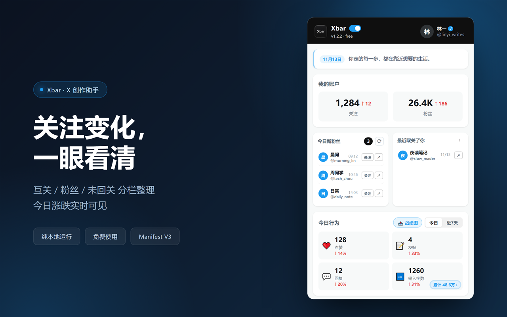
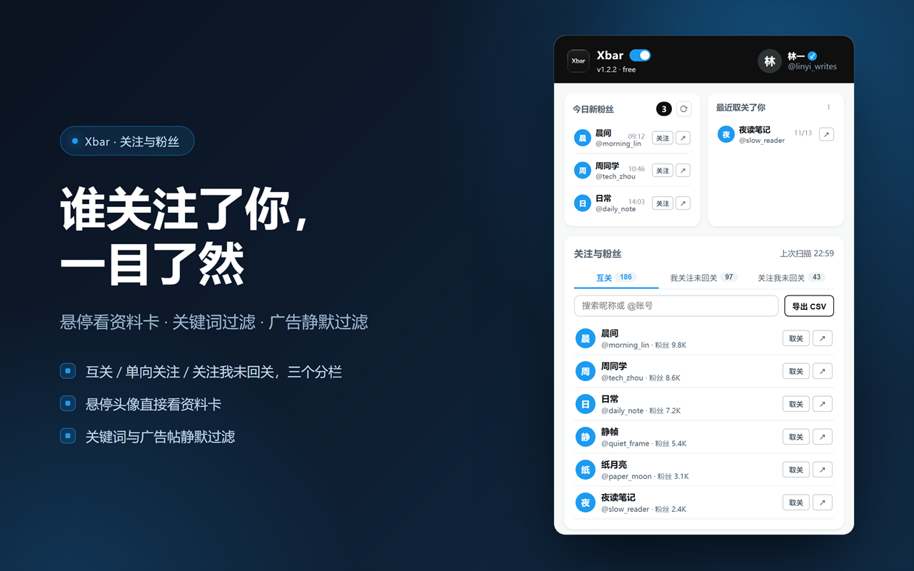
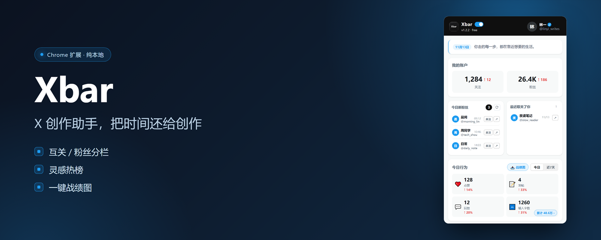

互关到底是谁？
关注列表几百上千人，来回对照粉丝列表找互关，既费眼又费时间。
看清关注与互关、整理时间线、找到能写的题、一键出图。Xbar 把你本来就能看到的信息，整理成你真正用得上的样子。

以上为产品真实界面截图
翻互关翻到眼花，时间线里全是噪音，发完帖又不知道效果如何。Xbar 从这三个地方开始帮你。
关注列表几百上千人，来回对照粉丝列表找互关，既费眼又费时间。
推荐的、推广的、不关心的关键词混在一起，真正想看的内容被埋掉。
不知道今天写了多少字、涨了几个粉丝，也没一张能顺手发出去的图。
没有账号体系，也不用绑定任何东西。打开 X，图标就在那儿。
从 Chrome 应用商店免费安装 Xbar，几秒就好。
打开或刷新 x.com 并登录；首次会自动读取一次你的账号数据。
点击工具栏里的 Xbar 图标，面板就出现在你面前。
不接管账号、不代发内容；面板顶部 logo 可随时一键启停。
按你真正要做的事分组：看清关系、安静刷时间线、找到题目、做出图、放心使用。
互关、粉丝、未回关分开摆放，不用再来回对照列表。后台会自动同步，打开面板就能看到结果。

产品真实界面截图
只留下你想看的内容。过滤规则在你自己的浏览器里执行，不改变 X 本身的数据。
效果示意图（非真实截图）
没灵感时给你题目，写完给你数据，想分享时给你一张干净好看的图。
产品真实界面截图
把互动关系画成星系，把今日状态变成称号。娱乐归娱乐，口径都写清楚。
效果示意图（非真实截图）
面板打开就显示上次数据，真实数值随后静默补齐。取数有闸门，尽量不打扰平台。
效果示意图（非真实截图）

下面用界面示意把当前版本的功能逐个摊开。示意图用于说明交互，产品真实截图在紧接着的画廊里。
互关、粉丝、未回关独立标签，不再来回对照两个列表。
基于每天 0 点快照：上升红、下降绿、无变化灰。
头像一停就出资料卡，可直接关注或取关。
关键词折叠、广告隐藏，只留下你想看的内容。
地区来自公开资料；AI 分数是本地启发式，默认关闭。
全球与本地热词排序，掷骰子随机抽一个能写的题。
只算你真正敲下的字，分今日与终身累计。
截图干净导出，海报可换配色、加二维码与水印。
今日数据做成卡片，保存、复制或直接带进发帖框。
真实头像径向分布，实线与虚线区分谁先发起互动。
本地检查机器味与常见风险，仅供参考，不代表 X 判定。
只检测你自己，全程本机完成，结果仅供参考。
更新说明和一次性提示收进铃铛，随时回看。
默认关闭；开启需自备 Supabase 并保存恢复码。
默认跟随浏览器，也可在面板内随时切换。
默认收起，只显示异常数量；点标题才展开说明和名单。账号恢复后会自动移出异常名单。
点击任意一张看大图。中英文界面截图都来自产品本身。
Xbar 没有账号系统、没有广告、没有统计埋点，也不出售任何数据。下面是它实际会碰到的东西。
设置、关注/粉丝快照、字数统计默认保存在 chrome.storage。云端备份需你主动开启，并提供自己的 Supabase 配置与恢复码。
不读取密码、Cookie 内容或私信；不代你登录、不代你发帖。关注/取关只在面板里由你点击触发。
只申请实现功能所必需的权限，没有远程代码，不执行远端脚本。
storage本地保存设置、快照与统计，不上传服务器。
alarms每 20 分钟后台静默刷新关注/粉丝数。
tabs找到已打开的 X 页面来同步数据。
downloads你点保存时把生成的 PNG 存到本地。
cookies请求时沿用浏览器现有登录态；不读取或保存 Cookie 内容。
contextMenus右键菜单提供启用 / 停用开关。
scripting在你打开的 X 页面上注入并更新面板元素。
x.com / twitter.com读取你当前可见的公开资料与列表；不读取私信。
涨跌口径：基于每天 0 点的真实快照；其他用户主页的涨跌基准为当日首次打开该主页时的数值，不代表全天真实涨幅。
当前版本 v2.5.0。以下为有明确记录的近期版本。
仍在持续迭代 · 后续更新会同步到本页
小版本更新，细节以 Chrome 应用商店的更新说明为准。
「用户异常」卡片改为可折叠：默认收起，只显示异常数量，点标题才展开说明和名单。
账号恢复后会自动从异常名单移除——名单扫描、主页/接口查询、关注或取关成功都会触发。
修复个人主页「正在关注 / 关注者」当天涨跌在数值与「—」之间跳动的问题；头像上方进度条会及时回填真实数据。
「检查更新」对本地加载版改为「本地版」状态，点击直达商店页；「限流检测」入口补上文字标注。
通知只显示在顶部铃铛里：点铃铛才展开，不再自动弹出或占用面板位置。
头像上方的粉丝/关注进度条渐变重新调校，未完成段保留淡色光谱。
同步状态与结果统一收进铃铛，面板正文更清爽；每条通知带日期，未读显示 NEW。
新安装后会给已打开的 x.com 页面自动补注入并开始同步。
首次打开的功能说明统一收进铃铛，随时可回看。
进度条换成更清晰的渐变色，不同进度对应不同颜色区间。
通知面板改为顶部浮层，展开时不再挤压正文；铃铛显示未读数量。
新增通知中心：更新说明和一次性提示都能在这里回看。
限流自测在未登录时不再锁 90 秒，遇到 429 会提前停止并进入冷却。
完全免费，无内购、无广告，也没有付费墙。
不会。Xbar 不接管账号、不代发内容；关注或取关都需要你自己在面板里点击。
默认只存在浏览器本地。云备份默认关闭，只有你主动开启并保存恢复码才会启用，随时可以关闭并删除。
蓝V采用三态：确认是蓝V显示蓝色，明确不是显示灰色，信息不足时不显示。AI 倾向评分是本地启发式判断，仅供参考且默认关闭。
支持 Chrome 及 Chromium 内核浏览器，Manifest V3。界面支持简体中文、English、日本語、한국어，默认跟随浏览器语言。
首次大约需要几秒读取账号；面板会先显示上次数据，真实数值随后静默补齐。若一直没反应，请先打开 x.com 再试。